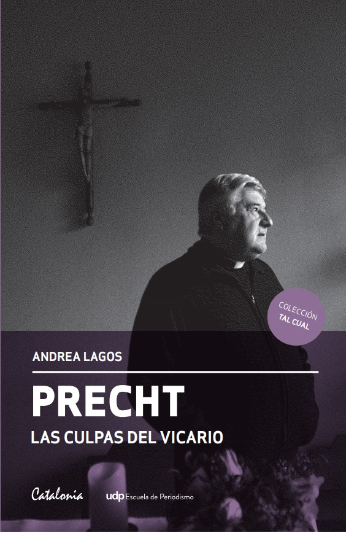

Andrea Lagos: “Precht y Karadima no son comparables”
Durante cuatro años y con más de 80 entrevistas, la periodista Andrea Lagos investigó no solo los casos de abusos de los que se acusa a Cristián Precht, sino la vida entera de uno de los sacerdotes más importantes de los últimos 50 años. El resultado es un libro que revela a un hombre “repleto de matices, fortalezas, debilidades, emociones contrapuestas, fe inquebrantable, al que sus faltas le empañaron la vida”. Equipo Paula.cl
En el primer piso de la Casa del Clero, ubicada en calle Santa Isabel con Lira, está la sacristía. Ahí hay un altar con un Cristo. El sacerdote entra, se pone la estola sobre los hombros, y canta. O reza. Depende del día. Luego hace las lecturas, continúa con el evangelio e incluso celebra la ofrenda. Cierra los ojos. Imagina que delante de él están sus padres, sus amigos, quienes lo han acompañado en los últimos años. Invita a los fieles a celebrar la comunión, pero está completamente solo. A Cristián Precht Bañados no le queda más remedio que darse la comunión a sí mismo y autobendecirse. Desde diciembre de 2012, cuando fue apartado del sacerdocio por cinco años tras ser sancionado por abuso sexual de menores, no puede celebrar misa en público. Por eso se inventa feligreses. “Es lo más raro que me ha tocado hacer”, dice el sacerdote en el libro Las culpas del Vicario (Ediciones Catalonia y Escuela de Periodismo UDP).
Con “La misa invisible” comienza esta biografía no autorizada sobre el mítico Vicario de la Solidaridad Cristián Precht Bañados, que la periodista Andrea Lagos decidió escribir en 2013. Hacía algunos meses que el Vaticano lo había condenado por “conductas abusivas contra mayores y menores de edad”. Precht fue apartado de ejercicio sacerdotal por cinco años, plazo que se cumple en diciembre.
Andrea Lagos, periodista de la UC, licenciada en Historia, editora de revista Qué Pasa y académica de la UDP, realizó más de 80 entrevistas no solo para desentrañar la historia de estos abusos, sino también las luces en la vida de un hombre admirado por muchos y por mucho tiempo. Un personaje lleno de matices que hacía más complejo un libro que recoge la épica y las caídas de uno de los sacerdotes más importantes de la Iglesia chilena del siglo XX y que descubre la parte más desconocida y polémica de su vida. La que lo hizo caer desde lo más alto.
¿Por qué biografiar a Cristián Precht?
Precht es quizás el sacerdote más relevante de la Iglesia chilena en los últimos 50 años. Sin haber logrado ser elevado a obispo, fue la mano derecha de cuatro cardenales chilenos, por largo tiempo dictó las directrices pastorales de la diócesis, y encabezó la protección a la víctimas de los atentados a los derechos humanos desde la Vicaría de la Solidaridad. A esa altura, no había cumplido, ni siquiera, 40 años. Precht jamás fue un cura popular ni menos de los que estuvieron por los Cristianos por el Socialismo. Venía de una familia tradicional y era apegado a la doctrina de la Iglesia, pero la Iglesia en la que se formó fue la del cardenal Silva Henríquez, la de la opción primordial por los pobres. Precht fue parte de las primeras generaciones que se fueron a vivir a las poblaciones porque no concibió vivir una vida con la esquizofrenia de las clases sociales. Es un hombre con un carisma excepcional y los claroscuros de su vida me interesaron.
¿Hay más viudos de Precht que de Karadima?
Fernando Karadima. Tiene nexos y cercanía con gente de los más distintos sectores sociales y políticos. No se entronizó en ser el párroco de un sector social acomodado, sino que también bajó a la Iglesia popular. Fue querido por la jerarquía. Karadima, en cambio, generó muchas vocaciones y varios obispos, pero la mayor parte de la Iglesia chilena a él no lo quería. Política y humanamente Precht fue alguien muy popular en este país. No se puede decir lo mismo de Fernando Karadima.
Mucha gente va a sentir que había que empatar a un sacerdote “más de izquierda” con Karadima. Eso fue una tesis de los amigos de Precht, pero el tiempo, la sanción eclesiástica y este libro dejan claro que esta no fue una vendetta de la derecha contra Precht.
¿Es más difícil escribir un libro sobre un personaje como Precht que sobre Karadima?
No les quito méritos a los autores de los buenos libros sobre Karadima. Ellos escribieron sobre alguien que se movió por sus intereses personales y por favorecerse sexual y económicamente de los parroquianos de El Bosque. Un ser maniqueo. Karadima aparece como un ser monstruoso y es irredimible para uno como lector. Precht es, en cambio, un hombre repleto de matices, fortalezas, debilidades, emociones contrapuestas, fe inquebrantable. Es un hábil y también un ser muy luminoso al que sus faltas le empañaron la vida. Precht, cuando se equivocaba, pedía disculpas. Karadima, no sabía que erraba. No son comparables. Además, representan dos iglesias católicas totalmente contrapuestas.
¿Sentiste presiones para no escribir el libro? ¿Alguien te dijo que para qué seguir ahondando en el desprestigio de la Iglesia?
La presión fue moral. ¿Por qué no dejas las cosas como están que para eso la Iglesia ya castigó a Precht? El problema es que nosotros, la prensa, no habíamos hecho bien nuestro trabajo. El sacerdote Fernando Montes dice en el libro “Me llama la atención que a él lo traten con cierto cuidado. Siento que el periodismo chileno ha sido extremadamente delicado porque (a Cristián) se le debe mucho”. Todo el caso Precht se llevó muy secretamente. Ningún documento eclesial se filtró, no hubo juicio penal contra él, las víctimas no quisieron aparecer públicamente. Varios jamás testificaron en su contra. Se sentían culpables de “sonarle la vida”, a un cura tan simbólico. Como resultado de esta oscuridad informativa muchísimas personas jamás creyeron que hubiese sustancia en este proceso canónico.
¿Cómo fue aproximarse a los casos de los abusados?
Complicado. Ellos no estaban deseosos de hablar. Sentían que dañaban a alguien que debía ser intocable y que era mejor callar. Hubo uno de ellos que tardó un año y medio en cambiar de opinión y dar su testimonio para el libro. Él sentía que Precht tenía demasiadas alianzas en el poder y que solamente podía perder si decía algo que opacase su imagen. Algunos de ellos aún no se explican por qué habían aceptado que el propio Precht los casara o por qué lo siguieron invitando a sus casas. La toma de conciencia tras el caso Karadima hizo que el caso Precht explotara.
¿Por qué ellos quisieron el anonimato, salvo uno?
Hay varios casos de mayores y menores en el libro, pero de entre los cuatro que eran menores al momento de los hechos denunciados, hablé con tres y del cuarto me informé por cercanos. En este último, no quise poner el nombre porque el ex menor no me autorizó, fue una cuestión ética. Doy señas, pero cuido su intimidad. Otros dos hombres me dijeron que no querían involucrar a sus familias (tienen hijos). Y el cuarto es Eduardo Salinas, quien se atrevió con todo, él estaba en tercero medio del Seminario Menor cuando ocurrieron los hechos.
¿Existe un deseo de la Iglesia (de Santiago) de proteger a Precht?
Monseñor Ricardo Ezzati, quien dirige la arquidiócesis de Santiago, intentó actuar rápidamente en este caso y realizar con celeridad el juicio canónico. Debía limpiar la mala imagen de la Iglesia chilena tras el escándalo Karadima. En el caso Precht pesquisé errores que cometió el cardenal. Conoció, en detalle, de dos denuncias de hombres contra Precht que habían sido menores y no hizo nada. Tuvo que estallar la denuncia de la familia de Patricio Vela meses después para que las otras se atendieran. Ezzati estimó que la pena justa para Precht eran cinco años apartado de la vida sacerdotal, pero el vicario judicial que hizo la investigación completa ya había recomendado que esta sanción fuera de por vida (a divinis). Sin embargo, Ezzati estaba en su derecho de decretar la pena que escogiera, así se lo había autorizado el Vaticano. Lo que no hizo fue atender la opinión de un experto judicial.
¿Por qué Cristián Precht estuvo dispuesto a ser entrevistado para una biografía de la que no iba a tener control alguno?
Porque la biografía yo la iba a hacer igual y él se informó por sus amigos y familia. En nuestra primera reunión en casa de su hermana (que yo pensé que sería un trámite para decirme que no hablaría), me planteó que no estaba feliz con que yo hiciera este proyecto. Sin embargo, aceptó dar su versión y mis condiciones de no ver ni una sílaba antes que la biografía se publicara. Ese mismo día comenzaron ocho largas sesiones de entrevistas por dos años y muchísimos mails con información anexa que le fui pidiendo.
¿Cómo fueron esos encuentros para él y para ti?
Él es una persona muy afable, llena de historias y sabe contarlas. Como el libro abarca sus 77 años de vida, hubo muchas horas en que nos entretuvimos con la época de la dictadura o describiendo las facciones antagónicas al interior de la Iglesia, por ejemplo. Cuando llegábamos a los temas peliagudos de los casos de abusos o el juicio canónico, él se afectaba más. Hubo una sesión que fue muy dura porque tuve que ser demasiado explícita. Pero jamás subió el tono, ni se molestó. Precht es un ser pacífico y tiene montones de amigos y familia que lo acompañan, aparte de una tremenda fe.
Él tiene un aura muy fuerte por la Vicaría, ¿pudiste sacarte eso para mirarlo bien con sus debilidades también?
No es fácil sacarle esa marca de fábrica pero, como todos, es un ser humano con virtudes, defectos y fragilidades. Después de investigar y entrevistar a tantos y tantas, estas se van exhibiendo. No hablo de aquellas debilidades que lo habrían llevado al abuso, sino de inseguridades, algunos problemas anímicos, marcas familiares y de estilo de vida.
¿Cómo está él?
Ha sido muy difícil. A ratos abatido, a ratos esperanzado por el fin de su condena. Está mayor ya, pero con la cabeza impecable, escribe mucho.
¿Te autocensuraste en algunos episodios?
En ninguno. Solo no puse en el libro lo que eran rumores o hechos no comprobados. Todo lo demás está en la biografía.
¿Lo más complejo fue reconstruir el caso Vela? ¿Por qué?
Fue complicado porque la familia Vela en bloque no cooperó, ni tampoco la viuda de Patricio, Carolina Bañados. Tomó el triple de trabajo esta reconstrucción. Y fue duro porque Patricio falleció y trágicamente. Este asunto debía ser tratado con delicadeza, pero no hubo autocensura.
¿Qué sensación tienes de Precht después de esta investigación?
Cristián Precht es un personaje mucho más complejo y lleno de matices de lo que todos pensamos. Un lado es el Cristián que un cura me definió así: es como Pepito TV, esa parodia de los animadores chilenos del Jappening con Ja. Por eso Precht jamás aburría a su público. Ninguna misa o retiro eran monótonos, hacía cantar a los tímidos, reír a los tristes, sentirse mejor a los enfermos. Sus sermones, que entrelazaban carisma espiritual con asuntos cotidianos, lo hicieron célebre. Pero existe también otro Cristián Precht que está en el libro también retratado y es el lado B.
¿Crees que es culpable de abusos?
Creo que la Iglesia llegó a la certeza de que tuvo conductas abusivas con mayores y menores y en el libro están los casos.
¿El tema de su supuesta homosexualidad es muy central para entender al personaje?
A Cristián Precht le pregunto de todo en las ocho entrevistas que tuvimos, y esto también y él lo niega explícitamente. El libro y las historias hablan por sí mismos, prefiero no ser yo quien clasifique a Precht en este sentido.
¿Qué futuro se le ve a Precht?
No lo sé aún, quiere partir a Coyhaique de cura raso ahora que en diciembre termina su sanción de cinco años. Es todo complicado. No existe la experiencia aún de un sacerdote de tanta relevancia que retorne al ministerio después de una sanción de este tipo.
Información addicional
El 15 de septiembre de 2018 el prefecto de la Congregación para la Doctrina de la Fe, cardenal Luis Ladaria, notificó al Arzobispado de Santiago que con fecha 12 de septiembre de 2018 el papa Francisco decretó, de forma inapelable, la dimisión del estado clerical "ex officio et pro bono Ecclesiae" y la dispensa de todas las obligaciones unidas a la sagrada ordenación de Precht Bañados.